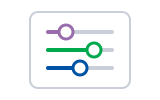
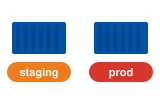
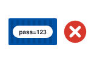
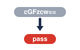
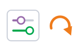

01The rule · ច្បាប់hard-code
We never hard-code settings inside the image.
យើងមិនដែលសរសេរការកំណត់ផ្ទាល់ក្នុង image ទេ។
ConfigMap និង Secret · ដាក់ការកំណត់ និងពាក្យសម្ងាត់នៅក្រៅ image
Image ដដែល ប្រើបានគ្រប់ environment ព្រោះការកំណត់ និងពាក្យសម្ងាត់ ត្រូវបានផ្តល់ពីខាងក្រៅ។

ConfigMapការកំណត់ធម្មតា
Same imageimage ដដែល ការកំណត់ខុសតាមលំដាប់៖ កុំសរសេរផ្ទាល់ → រក្សាទុក → ឲ្យ pod ប្រើ → ការពារ។

Space listen · ← → move · K show text
We never hard-code settings inside the image.
យើងមិនដែលសរសេរការកំណត់ផ្ទាល់ក្នុង image ទេ។
A ConfigMap stores normal settings, like a log level.
ConfigMap រក្សាទុកការកំណត់ធម្មតា ដូចជា log level។
A Secret stores passwords and API keys.
Secret រក្សាទុកពាក្យសម្ងាត់ និង API key។
The pod reads them as environment variables.
Pod អានពួកវាជា environment variable។
Or we mount them as files inside the container.
ឬ យើង mount ពួកវាជាឯកសារ ក្នុងកុងតឺន័រ។
Same image, different settings for staging and production.
Image ដដែល តែការកំណត់ខុសគ្នា សម្រាប់ staging និង production។

Secrets are only base64 encoded, not encrypted.
Secret គ្រាន់តែ encode ជា base64 ប៉ុណ្ណោះ មិនមែន encrypt ទេ។
So we limit who can read them.
ដូច្នេះ យើងកំណត់ថា អ្នកណាអាចអានវាបាន។

After changing a ConfigMap, we restart the pods to load it.
ក្រោយប្តូរ ConfigMap យើង restart pod ដើម្បីឲ្យវាផ្ទុកការកំណត់ថ្មី។
No. Anyone can decode it. Use a tool like Sealed Secrets or a vault.
មិនបានទេ។ អ្នកណាក៏អាច decode វាបាន។ ប្រើឧបករណ៍ដូចជា Sealed Secrets ឬ vault។
base64 មិនមែនជាការ encrypt ទេ។ វាគ្រាន់តែប្តូររូបរាងអក្សរ។
Environment variables don't change. Restart the pods.
Environment variable មិនផ្លាស់ប្តូរទេ។ ត្រូវ restart pod។
ឯកសារដែល mount អាច update ខ្លួនឯង តែយឺតបន្តិច។
In a Secret, given to the app as an environment variable.
នៅក្នុង Secret ហើយផ្តល់ឲ្យកម្មវិធីជា environment variable។
Update the ConfigMap, then do a rollout restart.
Update ConfigMap រួចធ្វើ rollout restart។
Only the app and the admins.확인 필요 · checkcheck
មានតែកម្មវិធី និង admin ប៉ុណ្ណោះ។
Tap a word's play button to hear it. Hide one side, then recall it before you tap to check.
We never hard-code settings inside the image.
យើងមិនដែលសរសេរការកំណត់ផ្ទាល់ក្នុង image ទេ។
A ConfigMap stores normal settings, like a log level. A Secret stores passwords and API keys.
ConfigMap រក្សាទុកការកំណត់ធម្មតា ដូចជា log level។ Secret រក្សាទុកពាក្យសម្ងាត់ និង API key។
The pod reads them as environment variables. Or we mount them as files inside the container. Same image, different settings for staging and production.
Pod អានពួកវាជា environment variable។ ឬ យើង mount ពួកវាជាឯកសារ ក្នុងកុងតឺន័រ។ Image ដដែល តែការកំណត់ខុសគ្នា សម្រាប់ staging និង production។
Secrets are only base64 encoded, not encrypted. So we limit who can read them. After changing a ConfigMap, we restart the pods to load it.
Secret គ្រាន់តែ encode ជា base64 ប៉ុណ្ណោះ មិនមែន encrypt ទេ។ ដូច្នេះ យើងកំណត់ថា អ្នកណាអាចអានវាបាន។ ក្រោយប្តូរ ConfigMap យើង restart pod ដើម្បីឲ្យវាផ្ទុកការកំណត់ថ្មី។
Q. Can I push my Secret YAML to Git?
Q. ខ្ញុំអាច push ឯកសារ Secret YAML ទៅ Git បានទេ?
A. No. Anyone can decode it. Use a tool like Sealed Secrets or a vault.
A. មិនបានទេ។ អ្នកណាក៏អាច decode វាបាន។ ប្រើឧបករណ៍ដូចជា Sealed Secrets ឬ vault។
Q. Will my app see the new ConfigMap at once?
Q. កម្មវិធីរបស់ខ្ញុំនឹងឃើញ ConfigMap ថ្មីភ្លាមៗទេ?
A. Environment variables don't change. Restart the pods.
A. Environment variable មិនផ្លាស់ប្តូរទេ។ ត្រូវ restart pod។
Q. Where is the database password?
Q. ពាក្យសម្ងាត់ database នៅឯណា?
A. In a Secret, given to the app as an environment variable.
A. នៅក្នុង Secret ហើយផ្តល់ឲ្យកម្មវិធីជា environment variable។
Q. How do we change a setting in production?
Q. យើងប្តូរការកំណត់នៅ production យ៉ាងដូចម្តេច?
A. Update the ConfigMap, then do a rollout restart.
A. Update ConfigMap រួចធ្វើ rollout restart។
Q. Who can read the secrets?
Q. អ្នកណាអាចអាន secret បាន?
A. Only the app and the admins.
A. មានតែកម្មវិធី និង admin ប៉ុណ្ណោះ។
Please don't paste the password in chat.
សូមកុំបិទភ្ជាប់ពាក្យសម្ងាត់ក្នុង chat។
Can you send it through the password manager?
អាចផ្ញើវាតាម password manager បានទេ?
Say it in your head first, then tap the box to check.